1.5 — Die Weihe
Bordbuch von Sekhar, Eintrag 117-1105
Gut, dass die Heimreise hinter uns liegt. Lekhan war nicht gut drauf und die drecks Biowaffe hat meiner Stimmung auch nicht gerade gutgetan. Warum haben wir so ein Höllenzeug bei uns? Wobei die letzten zwei Tage mit Lynne an Bord wirklich nice waren. Ich mag’s wenn sie sich in mein Fell krallt. Wie sie auf Dauer in den „Familienbetrieb“ passen soll weiß ich nicht und was sich Lekhan darunter eigentlich vorstellt auch nicht, aber das wird sich finden.
Ich liebe es nach Hause zu kommen. Erst der fantastische Ausblick auf den schwebenden Palast, der majestätisch über der orangen Ebene liegt und dann der Raumhafen voll von echtem Leben. Echte Gerüche, echte Geräusche, echte Emotionen - nicht so eine sterile GeDeCo Einrichtung mit gespielter Freundlichkeit und lauter Verkaufsautomaten die einen mit Werbejingeln zuballern. Interessant zu sehen wie das alles auf Lynne wirkt. Sie hat sich eigentlich ganz gut geschlagen, auch wenn man gemerkt hat, dass ihr die Aufmerksamkeit, die man bekommt, wenn man mit zwei Aslan unterwegs ist, nicht ganz geheuer war.
Das Steak war richtig gut. Lekhans Idee dem Steakhouse das Fleisch aus Borite schmackhaft zu machen finde ich gut. Ich sehe uns zwar nicht als Lebensmitteltransporteure, aber vielleicht lässt sich da ja dennoch etwas einfädeln.
Das Treffen mit Sal im alten Wasserloch war anstrengend. Ich verstehe ja, dass Geheimhaltung und Vorsicht geboten sind, aber wenn sie uns bei der Übergabe des Auftrags genauer gesagt hätte, was ihr wichtig ist, hätten wir unsere Wissenschaftler gezielt steuern können. Dass wir diesen Stab bekommen haben war ja reines Glück! Aber ich darf mich wohl nicht beschweren, immerhin stehe ich in ihrer Schuld. Mal sehen wie viel der Stab und die restlichen Infos wert sind. Hoffentlich genug! Hm - trinkt Lekhan mehr als früher? Egal - so lange er es verträgt.
Professor Voha war umgänglicher als ich es erwartet hätte, aber vielleicht ist mein Bild von Gelehrten momentan etwas durch unsere Wissenschaftler beeinträchtigt. Was für ein Glück, dass uns der Notruf erreicht hat und wir so letztlich an den Stab gekommen sind. Aber diese scheiß Biowaffe! Zum Glück scheinen wir keinen Schaden genommen zu haben, aber die ganzen Tests und Untersuchungen hätte ich mir gerne gespart! Ich wüsste zu gerne, ob Lekhan Angst um seine Potenz oder potenzielle Nachkommen hatte. Wobei - das ist gehässig. Ich hatte auch Schiss.
Es ist unglaublich! Was bilden die sich ein Lynne festzusetzen und zu befragen! Sie ist mein Gast und wenn sie ein Problem mit mir haben, dann sollen Sie gefälligst mich befragen! Ja verdammt noch mal. Ich bin offensichtlich von aslanischer Abstammung, aber meine Heimat ist Drinax - und wird immer Drinax bleiben. Ich bin für Drinax in den Kampf gezogen, haben für Drinax meine Gesundheit und mein Leben riskiert, habe für Drinax Piraten gefangen und dieser Wrax bildet sich ein dass, ja was bildet er sich denn ein? Dass ich nicht loyal wäre?! Frechheit!
Was für ein Witz, dass Lekhan und ich quasi dazu zeitgleich zu einer Audienz bei König Oleb geladen werden. Ich bin gespannt was man von uns möchte. Kann so ein Stab so wichtig sein? Sollen wir zurückfliegen und nach weiteren sindalischen Gegenständen suchen? Gibt es evtl. doch ein Problem mit Lynnes Herkunft. Lady Hil hat ja anscheinend auch sofort erkannt, dass Lynnes Herkunft hochrangiger sein muss, als sie versucht der Welt Glauben zu machen. Eine Frechheit meinem Gast ein Diplomatenzimmer anzubieten. Als hätte ich selbst keinen Raum. Ich habe verdammt noch mal ein ganzes Schiff! Uns öffentlich „Haustiere des Königs“ zu nennen ist eine Frechheit! Falls ich diese Frau irgendwann einmal umbringe, muss es dafür mildernde Umstände geben. Ich halte es für keine gute Idee, dass Lekhan ihr Angebot mit dem Zimmer angenommen hat. Er hätte einfach an Bord der Hermod schlafen können. Aber wenn er es nobel haben will - bitte. Hauptsache Lynne und ich können in sein Bett.
Ich weiß nicht, ob die nächtliche Begegnung mit Kasiyl Lekhan so nachdenklich macht, oder die Aussicht in den Palast zu gehen.
Seit uns gesagt wurde, dass wir nicht direkt zum König, sondern erst zu Prinzessin Rao sollen, kann ich Lekhans Unbehagen förmlich spüren. Wie kann ein ausgebildeter Agent denn so offensichtlich nervös und unruhig sein? Die Prinzessin muss ihm wirklich unglaublich viel bedeuten.
Wow - ein Kuss auf die Wange und das vor mir - das ist stark. Damit hat sie ihn jetzt völlig abgeschossen. Was auch immer sie von ihm will - er wird’s tun.
Ich bin hier so etwas von zu viel, aber ich kann ja nicht aus einer Audienz mit der Prinzessin abhauen - oder? Kann ich mich vielleicht freundlich - häh, was meint sie damit unser Test sei zu Ende? Welcher Test? Mich hat sie doch garnicht getestet. Ich bin verwirrt. Es ist sicherlich ganz gut, dass sie uns zum König bringt. Dann wird sicher alles klarer.
Wir bekommen ein Schiff und sollen für Drinax auf „Kaperfahrt“ gehen? Die Feinde von Drinax schwächen, Beute machen und nach und nach dabei helfen die Einflusskraft von Drinax auszuweiten? Wie geil ist dass denn? Endlos gefährlich, aber wie krass! Das ist ein aberwitziger Plan - aber gut. Auf die Idee, dass zwei Aslan in der Form für Drinax agieren kommt keiner! Wahnsinn! Ja, ja - ich will! Nein, Oleb höre jetzt bloß nicht auf deinen Sohn. Ich und Lekhan sind genau die richtigen für so eine Mission.
Das Schiff muss krass sein, wenn Wrax neidisch darauf ist, dass es jemand anderes als er kommandieren darf. Schon alleine dafür lohnt es sich. Oh wie großartig - das ist noch besser als Piraten zu jagen!
Das Schiff ist krass. Alt, eigenwillig und einfach krass. Damit auf Jagd zu gehen wird eine wahre Freude. Mit der Hermod und der Chubb zusammen hätten wir eine ganze Flottille! Was sich da alles anstellen lässt!
Mir fällt einfach kein Vorwand ein die beiden (Lekhan und Rao) alleine zu lassen, aber ich kann hier nicht weiter rumstehen. Das ertrage ich nicht und Lekhan vermutlich auch nicht. Was soll’s - ich mache einfach einen Rundgang durchs Schiff.
Zusammenfassung
- Auf dem Flug von Marduk nach Drinax: Lekhan ist grummelig (Aprils Abfuhr, Lynne und Sekhar beim Flirten, die Rückkehr an den Hof, Delaneys Tod). Sekhar und Lynne genießen ihre Affäre.
- Die Chubb mit der Biowaffe und der Kiste sindalischer Alltagsgegenstände bleibt an einem Asteroiden, drei Tage von Drinax entfernt. Den Zierstab und Lynne nehmen die Brüder auf der Hermod mit zum Schwebenden Palast.
- Per Streulaser kommt Sals Nachricht: „Treffen, schnellstmöglich, altes Wasserloch.” Anflug mit Eskorte der Sternengarde, Landung in der hintersten Bucht, wie üblich. Sekhar bürgt bei der Einreise für Lynne; kurze Tour durch Palastgarten und Oberes Labyrinth, das Quartier der Brüder, Essen im Steakhaus, ein Abstecher in Rachandos Basar.
- In der Kneipe im Labyrinth ist Sal erst enttäuscht, dann zufrieden, als sie den Zierstab sieht: „Sollte reichen.”
- Gleich darauf das Treffen mit Gelehrtem Voha in der Universität: Er übernimmt Zierstab und Biowaffe und lässt die Alltagsgegenstände schätzen. Für den nächsten Morgen haben die Brüder einen Termin bei Rao.
- Lynne wurde inzwischen von der Sternengarde festgehalten und von Lord Wrax persönlich verhört. Danach taucht Lady Hil auf und interessiert sich für Lynne. Nachts trifft Lekhan Kasiyl auf einem Balkon.
- Am Morgen: Rao, dann König Oleb im Thronsaal. Kaperbrief, Freibeuter, „keine Mörder, sondern Diebe”. Prinz Harrick und Lord Wrax widersprechen; Oleb lässt das nicht gelten. Wrax übergibt den Brüdern ihr neues Schiff, eine Weihe — noch ohne Namen.
Begegnungen
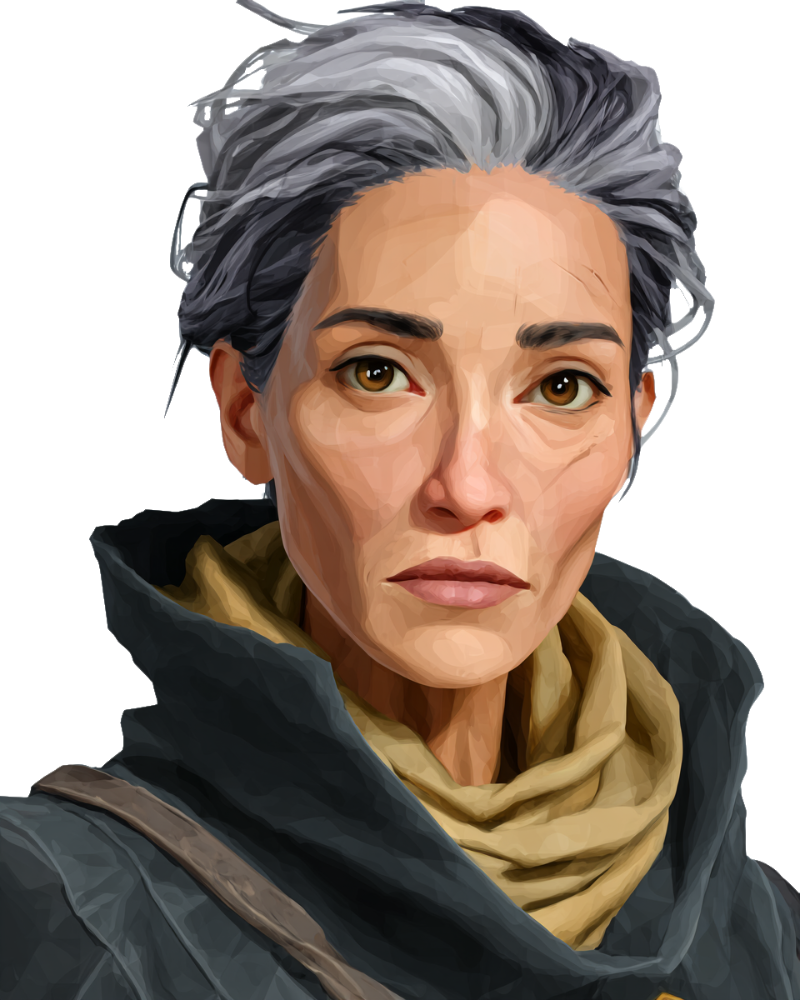
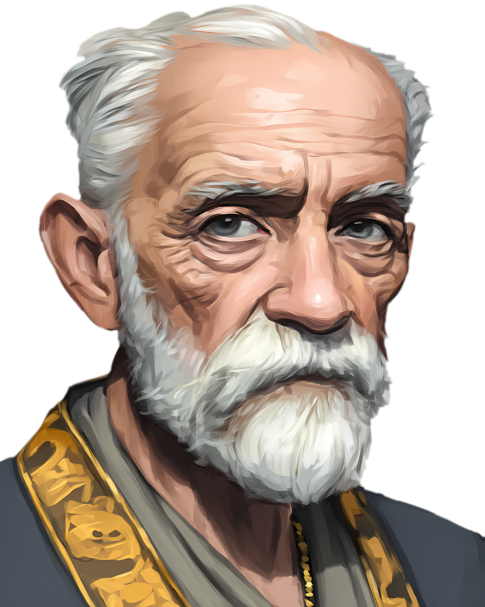
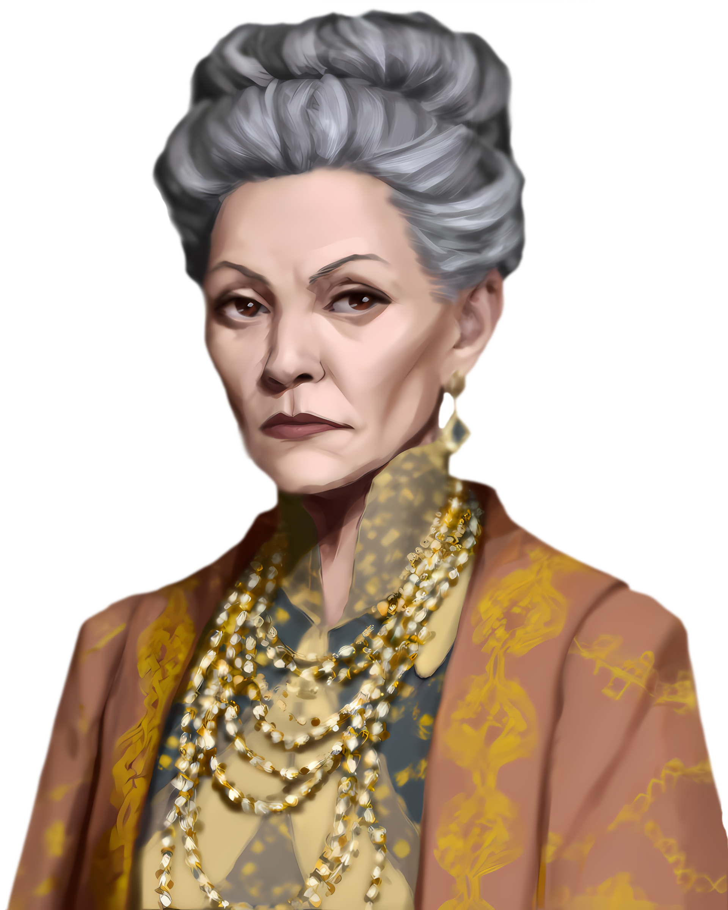

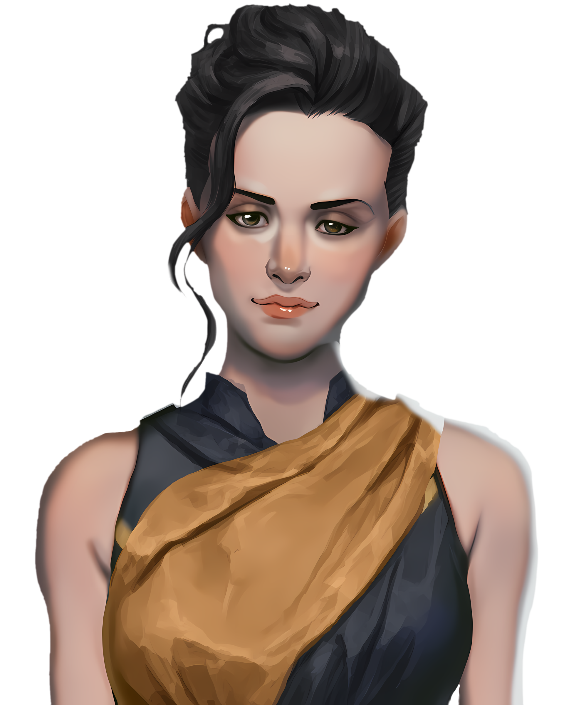

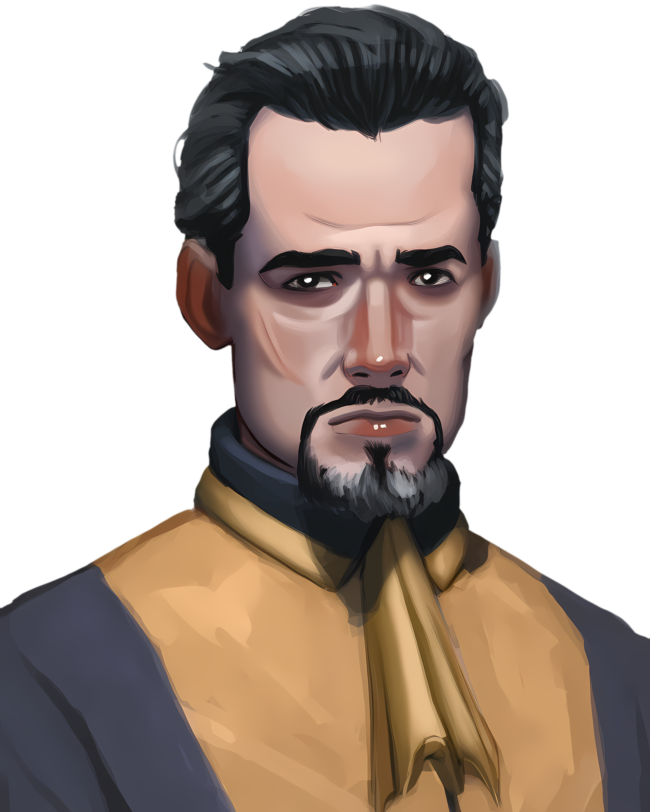
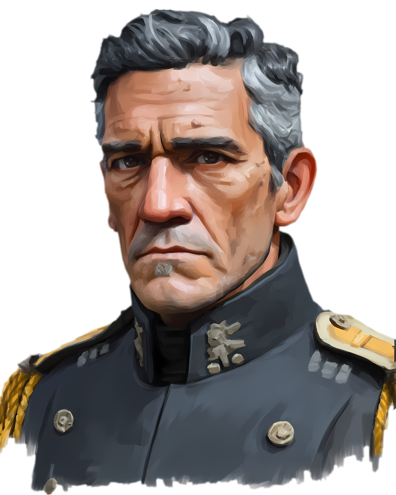
- Sal Dancet — Mittelsfrau des Hofes · Kneipe im Labyrinth. Erst enttäuscht über die magere Ausbeute und die abgebrochene Mission, als die Brüder den Biowaffencontainer in den Vordergrund stellten; zuversichtlich, als sie den Zierstab sah. Nahm nichts mit. „Melde mich bald wieder.”
- Gelehrter Voha — Universität · Besprechungsraum. Hat kybernetische Augen mit mikroskopischer Sicht. Sehr angetan vom Zierstab, erwähnte ein Projekt des Hofes, ohne Einzelheiten. Übernimmt den Zierstab zur weiteren Analyse, Bezahlung „auf dem üblichen Weg”. Lässt die Biowaffe auf einer Forschungsstation auf einem Mond untersuchen und dafür die Alltagsgegenstände schätzen, um beim Verkauf zu helfen.
- Lord Wrax — Kommandant der Sternengarde. Ließ Lynne „wegen Personenkontrolle und Verdacht auf Spionage” festnehmen und verhörte sie fast drei Stunden lang selbst. Er hat erkannt, dass sie keine Belterin ist, sondern eine militärische Ausbildung im Imperium hat. Widersprach im Thronsaal der Übergabe. Übergab die Weihe so knapp wie möglich und ließ durchblicken, dass er auf das Scheitern der Brüder hofft, solange das Schiff heil bleibt.
- Lady Hil — Hofdame. Nannte die Brüder öffentlich „die Haustiere des Königs”. Sieht in Lynne eine adlige Erziehung und will mehr wissen. Bot Lynne ein Zimmer in der Diplomatenstadt an; Lynne lehnte ab, Lekhan nahm es stattdessen.
- Kasiyl — Hof-Aslan · allein auf einem Balkon. Ein kurzes, intensives Gespräch mit Lekhan: Er wittert eine Veränderung. Oleb habe vielleicht noch zehn gute Jahre, aber zwei Thronfolger mit unterschiedlichen Ansichten. Die Aslan-Front rücke jedes Jahrzehnt näher. Drinax stehe noch auf wackligen Beinen; wenn sich nicht bald etwas tue, werde es erlöschen.
- Prinzessin Rao — Arbeitszimmer. Küsste Lekhan zur Begrüßung auf die Wange, dankte für die Dienste und freute sich, dass „die Prüfung” endlich ende. Welche Prüfung, sagte sie nicht. Half im Thronsaal, Olebs Worte zu deuten, und führte die Brüder ausführlich durch die Weihe. Sie und Lekhan sind wieder zusammen.
- König Oleb XVI — Thronsaal. Schon am Morgen angetrunken. Mission, Kaperbrief, Freibeuter, der Glanz von Drinax, der Drache erwacht, „keine Mörder, sondern Diebe” — und alles so formuliert, als gäbe es keine Wahl. Wies Harrick und Wrax zurecht und zog sich mit Rao und Harrick zurück.
- Prinz Harrick — Thronsaal. Widersprach der Übergabe und bat seinen Vater um ein Gespräch unter vier Augen.
- Rachando — sein Basar. Kurzer Besuch; seitdem kennt er die drei.
- Lynne Morgan — mit den Brüdern im Palast. Wollte die Stadt erkunden und wurde dabei festgenommen und verhört. Aufgebracht, aber unverletzt. Lehnte Lady Hils Zimmer ab und blieb bei Sekhar.
- April Breune — (Rückblick auf den Flug nach Marduk) Flirtete mit Lekhan, wies ihn aber ab.
Orte
- Ein Asteroid im Drinax-System, drei Tage vom Planeten entfernt — dort liegt die Chubb mit Biowaffe und Alltagsgegenständen.
- Schwebender Palast — Anflug mit Eskorte, hinterste Landebucht. Die Bewohner sehen den Aslan nach oder weichen ihnen aus, angefeindet werden sie nicht.
- Palastgarten, Oberes Labyrinth — die erste Tour mit Lynne.
- Quartier der Hof-Aslan — ein Raum im Oberen Labyrinth mit Tageslicht, aber nah am Raumhafen (vorbeidonnernde Triebwerke). Putz bröckelt, staubig, aber ordentlich. Während niedere Adlige mit ihren Familien in breiten Gängen schlafen, ist ein eigener leerer Raum Luxus und Abgrenzung zugleich.
- Rachandos Basar, ein Steakhaus.
- Die Kneipe im Labyrinth — das „alte Wasserloch”, in dem die Brüder mit Sal schon einige feuchtfröhliche Abende verbracht haben.
- Universität — Vohas Besprechungsraum.
- Diplomatenstadt — Lekhans Zimmer, angeboten von Lady Hil.
- Raos Arbeitszimmer, Thronsaal.
- Königlicher Raumhafen — ein gut bewachter Hangar, darin die Weihe.
- Das Schiff — eine Weihe, noch ohne Namen. Ein antikes Schiff, nicht im besten Zustand, aber elegant, aggressiv und fremdartig. Holzvertäfelung und organisch wirkende Metallstrukturen, wie man sie auf neueren Schiffen nie sieht, schon gar nicht auf Kriegsschiffen.
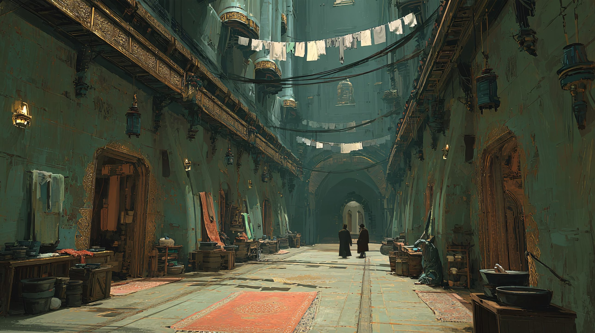
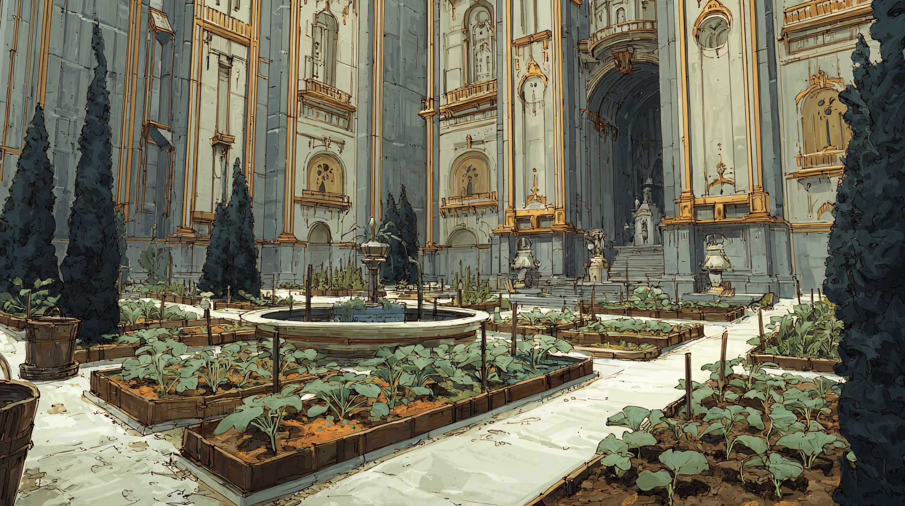
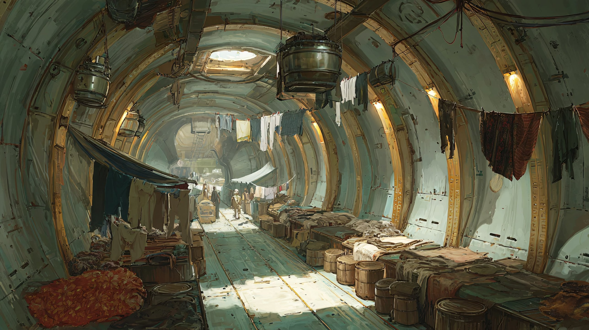
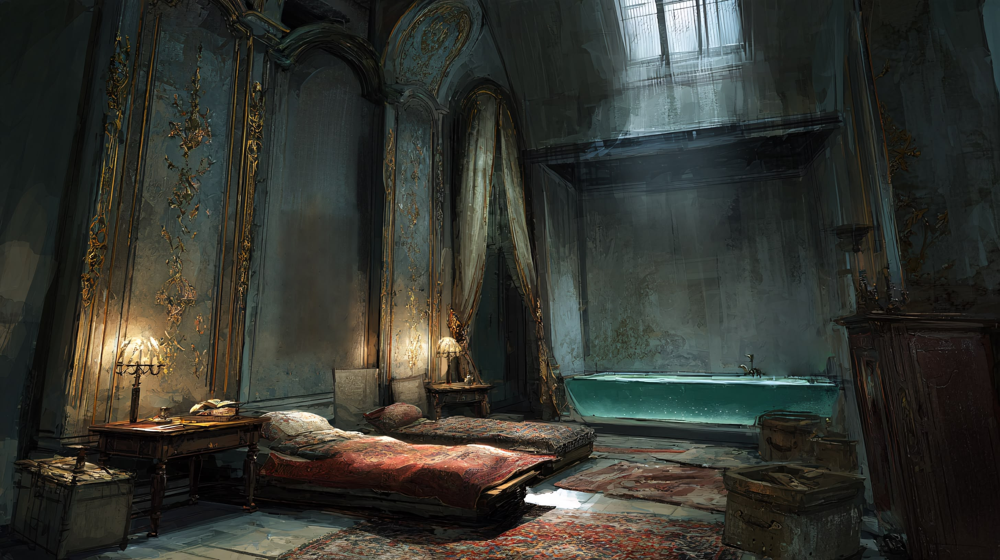
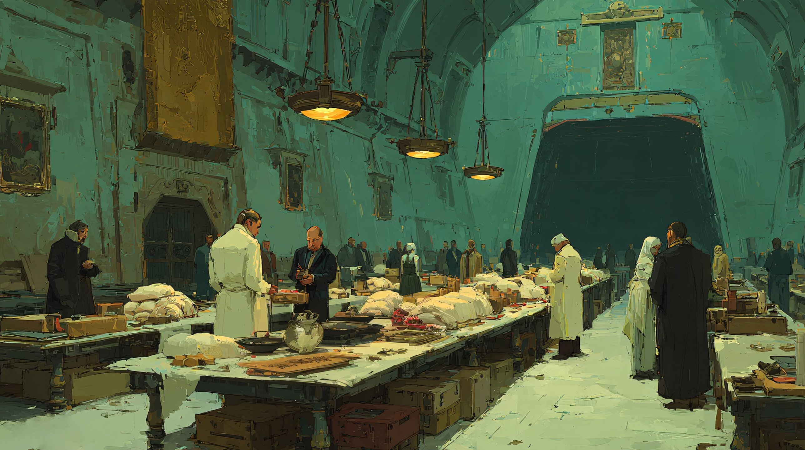
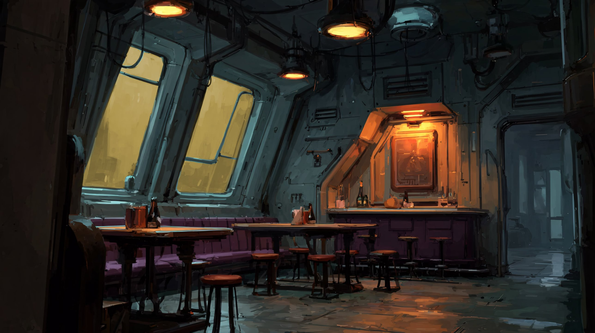
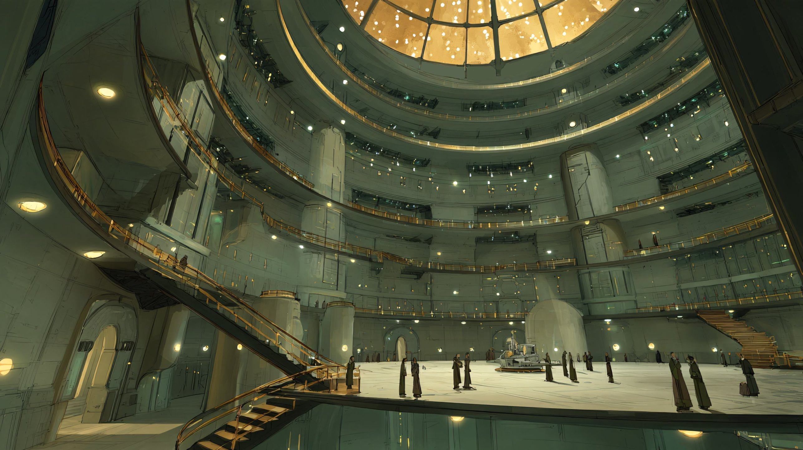
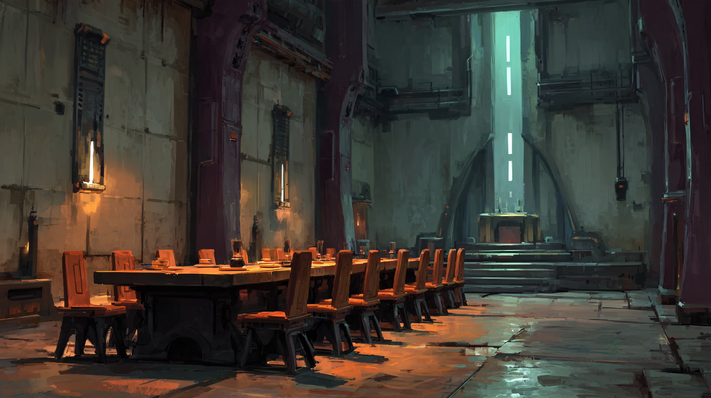
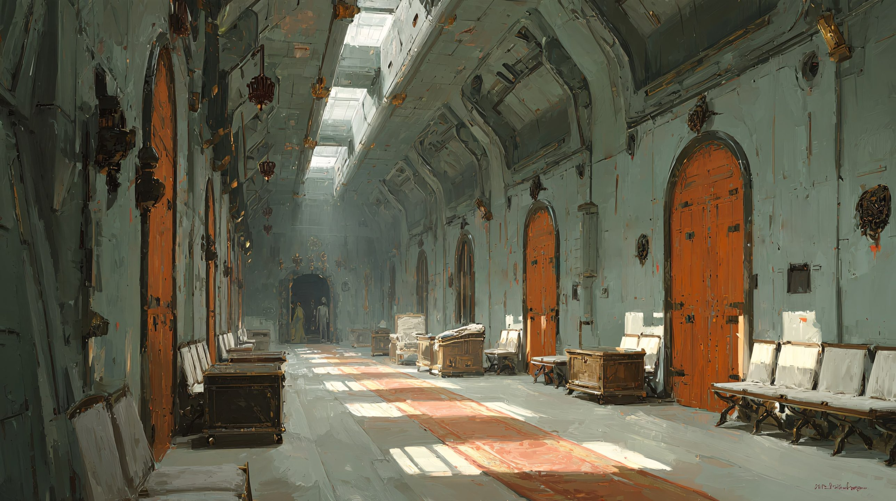
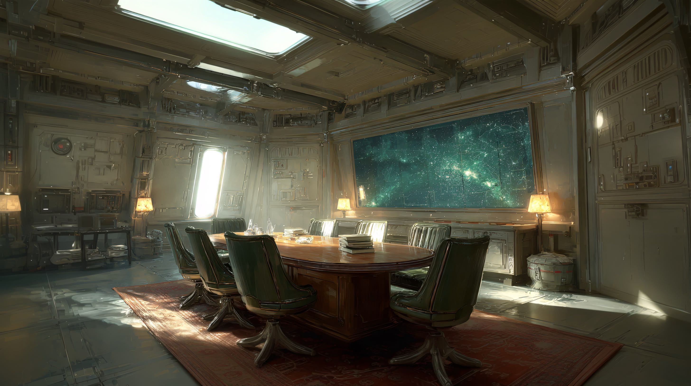
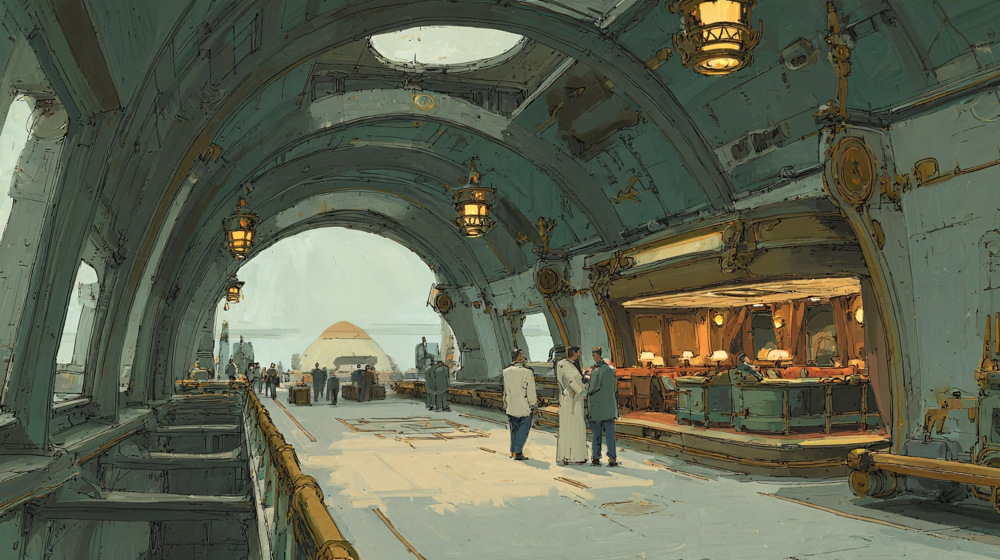
Entscheidungen der Crew
- Entscheidung: Die Chubb mit der Biowaffe bleibt draußen am Asteroiden.
- Warum: Keine Biowaffe im Palasthafen.
- Folge / offen: Biowaffe und Alltagsgegenstände müssen noch zu Voha.
- Entscheidung: Sekhar bürgt bei der Einreise für Lynne.
- Folge: Was Lynne am Hof tut oder ist, fällt auf ihn zurück.
- Entscheidung: Sal zuerst die Biowaffe zeigen und den Zierstab zurückhalten.
- Folge: Sal war enttäuscht, bis der Stab auf den Tisch kam.
- Entscheidung: Zierstab und Biowaffe an Voha geben.
- Folge / offen: Bezahlung „auf dem üblichen Weg”; Analyse läuft.
- Entscheidung: Lekhan hält Sekhar davon ab, Wrax sofort zur Rede zu stellen.
- Entscheidung: Lekhan nimmt Lady Hils Zimmer in der Diplomatenstadt an, damit Sekhar und Lynne Ruhe haben.
- Folge / offen: Lekhan wohnt jetzt in Lady Hils Einflussbereich.
- Entscheidung: Die Weihe annehmen — wobei Oleb keine Wahl ließ.
Offene Fäden
- Biowaffe und Alltagsgegenstände vom Asteroiden zu Voha bringen.
- Bezahlung „auf dem üblichen Weg” — und was ergibt Vohas Analyse des Zierstabs?
- Welche „Prüfung” meint Rao?
- Was haben Harrick, Rao und Oleb unter vier Augen besprochen?
- Lord Wrax verdächtigt Lynne der Spionage — und hofft auf das Scheitern der Brüder.
- Lady Hil will wissen, wer Lynne wirklich ist.
- Kasiyls Warnung: zwei Thronfolger, die näher rückende Aslan-Front, ein wankendes Drinax.
- Wie soll das Schiff heißen?
- Die Weihe braucht eine Crew. Was wird aus Lynne, der Chubb und der Hermod?
- Rachando kennt die drei jetzt.
- Rao und Lekhan — wieder zusammen. Und Sekhar und Lynne?
Bezüge & Notizen
- Sals Regel aus 1.1 — Die Schoßkatzen des Königs: Bericht nur persönlich. Diesmal kam Sal ihnen per Streulaser zuvor.
- Lady Hils „Haustiere des Königs” — und die „Schoßkatzen”, wie sich die Brüder seit Langem fühlen.
- Oleb will „keine Mörder, sondern Diebe” — kurz nachdem Delaney an der Jolly Joel starb (1.4 — Notruf der Jolly Joel).
- Wrax erkennt Lynnes militärische Ausbildung — genau das, was Sekhar beim Swing-by schon bewundert hat.
Beute, Verluste, Ausgaben
| Was | Menge / Zustand | Anmerkung |
|---|---|---|
| Zierstab (sindalisch) | 1 | an Voha übergeben, Bezahlung „auf dem üblichen Weg” |
| Biowaffencontainer | 1 | noch an Bord der Chubb am Asteroiden; geht an Voha |
| Sindalische Alltagsgegenstände | 1 Kiste | noch an Bord der Chubb; Voha lässt sie schätzen |
| Schiff der Weihe-Klasse | 1 | vom König übergeben, noch ohne Namen |
| Kaperbrief | 1 | vom König |
| Schiffssäbel | 1 | trägt Sekhar |
Mechanik & Regelfragen
Wünsche an die Spielleitung
Recap & nächste Sitzung
- Erhaltene Erfahrungspunkte: 2
- Ausgangslage: An Bord der Weihe im königlichen Raumhafen des Schwebenden Palasts.
- Was wollen wir tun:
Logbuch-Übersicht
- ▸ 1.5 — Die Weihe · 21.11.2026 · in-game 116-1105
- 1.4 — Notruf der Jolly Joel · 24.10.2026 · in-game 106-1105
- 1.3 — Streit in Borite · 11.10.2026 · in-game 100-1105
- 1.2 — Willkommen in der Wissenschaft · 29.08.2026 · in-game 091-1105
- 1.1 — Die Schoßkatzen des Königs · 01.08.2026 · in-game 090-1105
- 0.2 — Charaktererschaffung - Hauptcharaktere · 11.07.2026
- 0.1 — Charaktererschaffung - Nebencharaktere · 07.07.2026